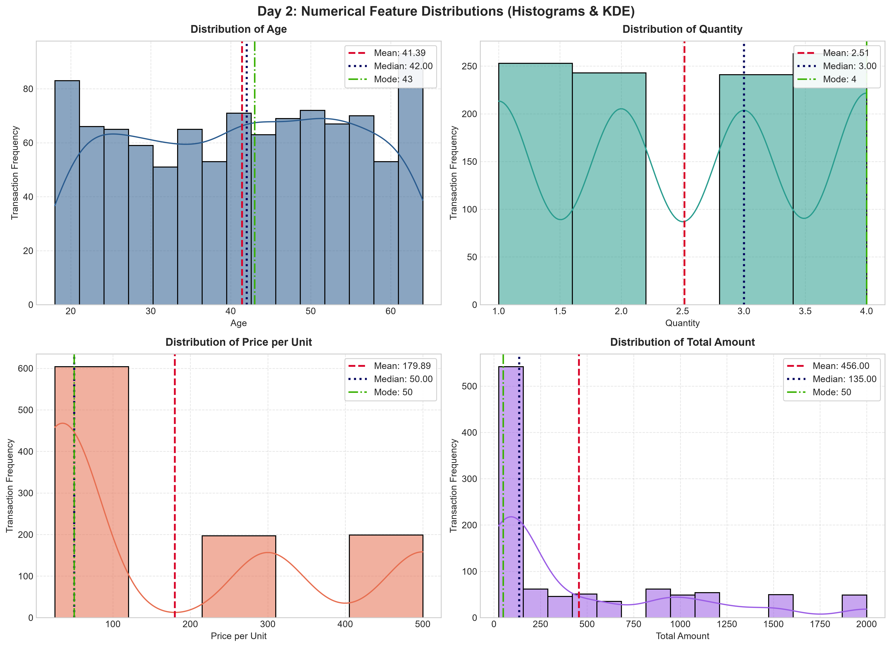
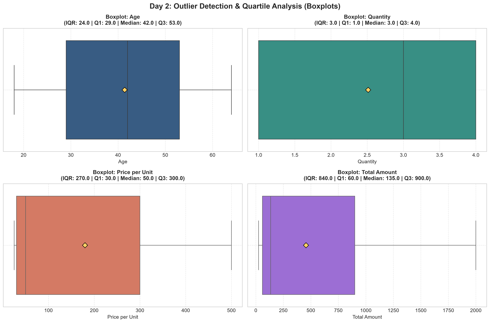
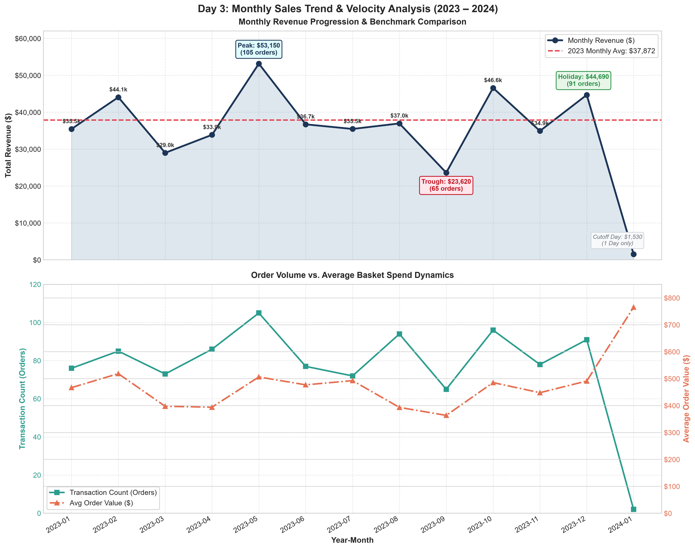
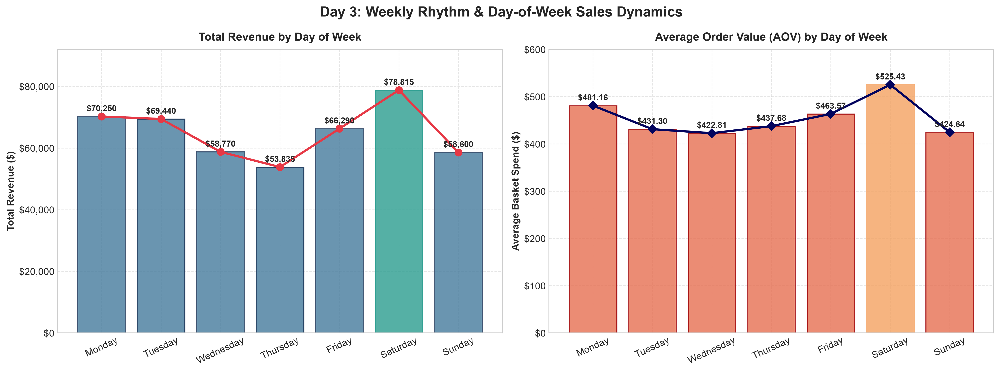
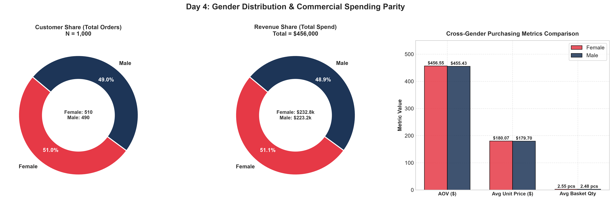
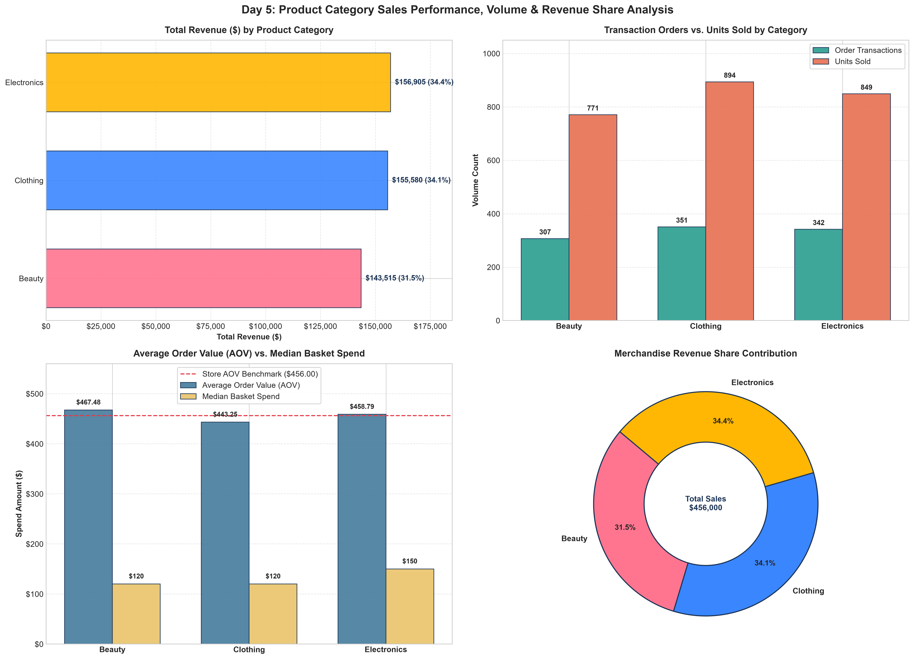
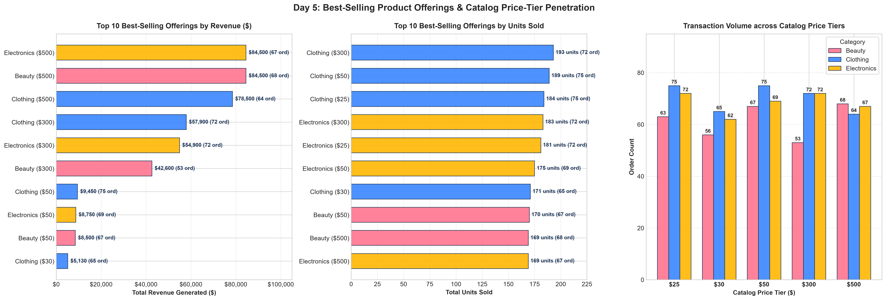
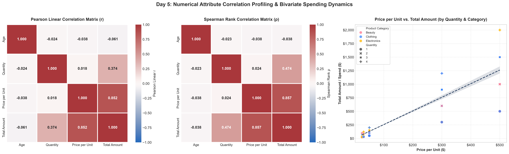
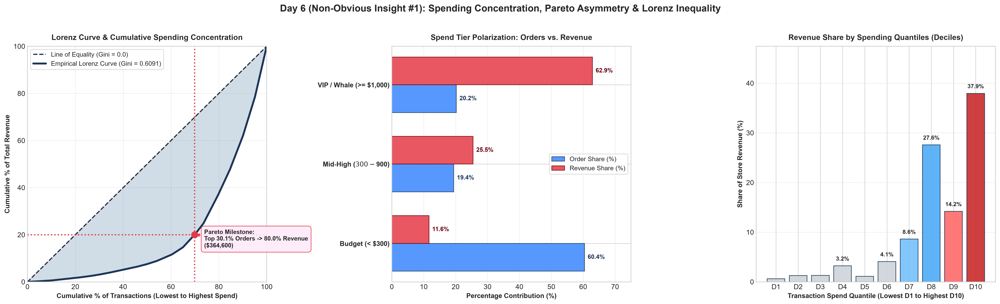
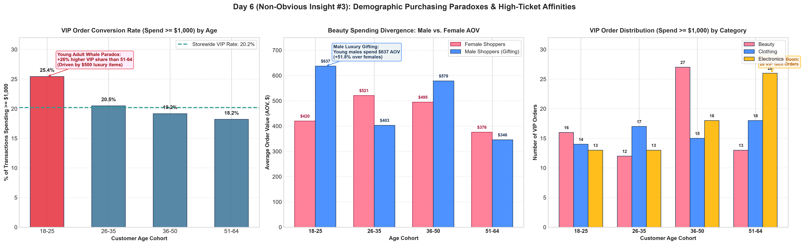

Retail Sales Exploratory Data Analysis
Uncovering purchasing patterns, customer demographic parity, temporal rhythms, and strategic business growth levers across 1,000 transactions.
Dataset Architecture & Data Hygiene
- Flawless Data Hygiene: Zero null, NaN, or corrupted records across all 9 schema attributes. Primary key
Transaction IDis 100% unique. - Temporal Coverage: Complete 12-month calendar year spanning from
2023-01-01to2024-01-01. - Three Core Departments: Merchandise is classified into
Clothing,Electronics, andBeauty. - Demographic Boundaries: Customer ages range from 18 to 64 years old with balanced representation across genders.

Descriptive Statistics & Revenue Skewness
- Severe Right-Skewed Revenue: While the median transaction spend is only $135.00, the mean is pulled up to $456.00 by high-ticket premium purchases scaling up to $2,000.
- Discrete Catalog Pricing: Catalog unit prices are strictly distributed across 5 discrete tiers: $25, $30, $50, $300, and $500.
- Symmetrical Demographics & Basket Sizes: Age skewness is
-0.049and quantity skewness is-0.014, confirming uniformly distributed shopper ages and basket sizes. - Zero Outliers: Tukey's 1.5×IQR formula confirmed zero anomalies outside legitimate domain limits.

Temporal Velocity & Seasonal Trajectory
- Bimodal Annual Cycle: Revenue exhibits two pronounced cycles: a late-spring surge in May ($53,150 across 105 orders) and a sustained Q4 holiday acceleration ($126,190).
- Late-Summer Slump: September represents the lowest performing month ($23,620) before a dramatic +97.2% rebound in October.
- AOV Stability: Despite volume swings, Average Order Value remains remarkably stable around $430–$518 throughout the entire year.

Day-of-Week Velocity & Weekend Shifts
- Weekend Acceleration: Saturday is the undisputed commercial champion, driving $78,815 across 150 transactions.
- Midweek Quiet Zone: Wednesday and Thursday experience the lowest turnover ($53,835 to $57,000) and order counts (~124–125).
- Department Decoupling: As we will see, customer departmental preferences decouple significantly between weekdays and weekends.

Customer Demographics & Spending Parity
- Near-Perfect Gender Symmetry: Female customers account for $232,840 (51.06%) while male patrons account for $223,160 (48.94%).
- Zero Spending Disparity: Female AOV ($456.55) and Male AOV ($455.43) are virtually identical (difference < $1.12, p = 0.975).
- Uniform Age Cohort Power: Revenue is evenly distributed across cohorts: Young Adults (18–25: $92.5k), Young Professionals (26–35: $97.7k), Middle Age (36–50: $146.5k), and Seniors (51–64: $119.3k).

Product Category Revenue & Balanced Demand
- Balanced Portfolio: Electronics accounts for 34.34% ($156.6k), Clothing for 34.12% ($155.6k), and Beauty for 31.54% ($143.8k).
- Minimal Revenue Divergence: The spread between the top category and lowest category is less than 2.8%, showcasing a resilient product mix.
- Consistent Units Per Transaction: All three departments average ~2.5 units per order.

Catalog Price Tiers & Revenue Domination
- Top 10 Offerings Generate Over Half of Sales: Products priced at $500 and $300 capture the highest total transaction revenue.
- The 88/40 Rule: Items priced at $300 or $500 account for only 39.6% of transaction volume, but deliver 88.4% of total revenue ($403,050).
- Budget Essentials Volume Drivers: Everyday low-priced items ($25 to $50) drive 60.4% of unit volume but contribute only 11.6% of store revenue.

Correlation Dynamics & Basket Inelasticity
- Price per Unit Dictates Revenue: Total basket spend is overwhelmingly driven by Unit Price (
r = +0.852) rather than quantity (r = +0.373). - Rigid Unit Inelasticity: The correlation between Price and Quantity is virtually zero (
r = +0.017, p = 0.580). Shoppers purchase ~2.5 items regardless of whether the product is $25 or $500! - Age Independence: Customer age has no linear correlation with spending (
r = -0.001).

The Pareto Whale Economy (Gini = 0.6091)
- Severe Revenue Concentration: The top 20.2% of transactions drive 62.89% of enterprise revenue ($286,800.00) with an average ticket of $1,419.80.
- High Gini Coefficient: A Gini inequality index of 0.6091 confirms high spending polarization.
- The Bottom Decile Squeeze: The bottom 40% of orders contribute less than 7% of total revenue.
- Retention Imperative: Maintaining the top-quintile shopper cohort is critical for enterprise solvency.

Temporal Micro-Rhythms & Demographic Paradoxes
- Weekend Electronics Lift (+23.0%): Electronics average order value surges on weekends ($526.40 vs $428.00 weekday), peaking on Saturday ($563.68).
- Beauty's Monday & Friday Peaks: Beauty spikes on Mondays ($623.59) and Fridays ($577.16)—aligning with self-care planning and weekend preparations.
- Young Adult VIP Paradox (25.4%): 18–25 shoppers deliver the highest VIP conversion rate in the entire business (25.44%), over-indexing on $500 luxury items.
- Male Luxury Gifting: Young adult males buying Beauty generate an AOV of $637.32 (+51.8% over females), identifying a lucrative luxury gifting archetype.

Actionable Recommendations & Financial Lift
1. VIP Concierge & Whale Retention Engine
Enroll $\ge \$1,000$ spenders into a "Black Tier" loyalty club with white-glove clienteling and automated 90-day previews.
2. Dayparted Marketing & Staffing Alignment
Concentrate Beauty ad spend on Sun/Mon and Thu/Fri; shift tech marketing and floor staff to weekend peaks.
3. Cross-Department Bundles & Tiered Discounts
Pair high-margin tech and fashion items; offer multi-item tiers (10% off 3 items) to push baskets from 2.5 to 3.0 units.
4. Male Luxury Gifting & BNPL Financing
Launch targeted "Gifts for Her" campaigns and integrate Buy Now Pay Later (Klarna/Affirm) to unlock young adult liquidity.